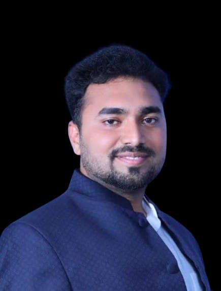

Leadership

President’s Message
Shri Vaijinath Hiremath
President, Research Education SocietySince its establishment in 1990, Research Education Society has been guided by a single belief — that education is the foundation of social progress and national development.
When we began this journey in Bidar, our vision was clear: to create institutions that provide not only academic knowledge but also values, discipline, and opportunities for holistic growth. Over the years, RES has grown into a trusted educational and skill development network, serving students from diverse backgrounds.
Our focus has always been on reaching rural and underprivileged communities, ensuring that quality education is accessible to all. We believe that true education empowers individuals to become responsible citizens and contributors to society.
As we move forward, our commitment remains strong — to maintain academic excellence, strengthen institutional integrity, and continue expanding opportunities for future generations.
I extend my heartfelt gratitude to our students, parents, faculty members, partners, and well-wishers who have been part of this journey.
Together, we will continue to build a brighter and stronger future.

Secretary & CEO’s Message
Shri Vishwaradhya Hiremath
Secretary & CEO, Research Education SocietyEducation today must go beyond textbooks. It must prepare individuals for real-world challenges, industry demands, and global opportunities.
At Research Education Society, we are committed to integrating traditional education with modern skill development. Through our schools, colleges, NSDC and KSDC training centers, Samarth programs, CSR initiatives, and Recognition of Prior Learning (RPL) projects, we aim to create a skilled and confident workforce.
Our approach focuses on:
- Quality academic standards
- Industry-aligned skill training
- Government partnerships
- Technology integration
- Community development
We continuously strive to improve infrastructure, enhance training methodologies, and expand our reach to more communities across Karnataka.
Our mission is not only to educate but to empower.
With innovation, transparency, and dedication, we will continue to strengthen RES as a leading institution in education and skill development.
Thank you for being part of our journey.